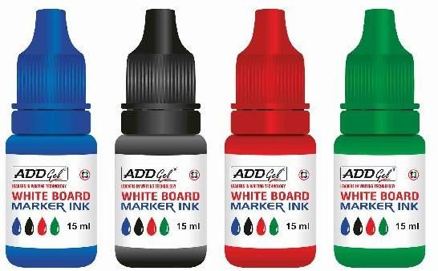
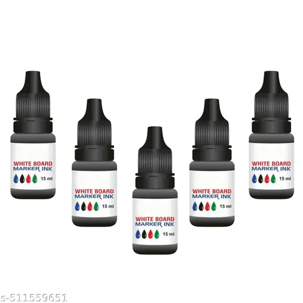
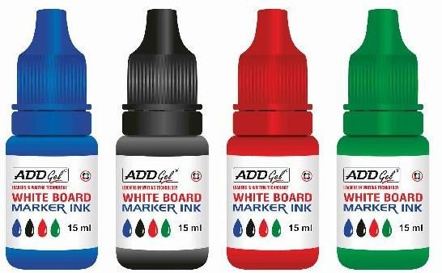
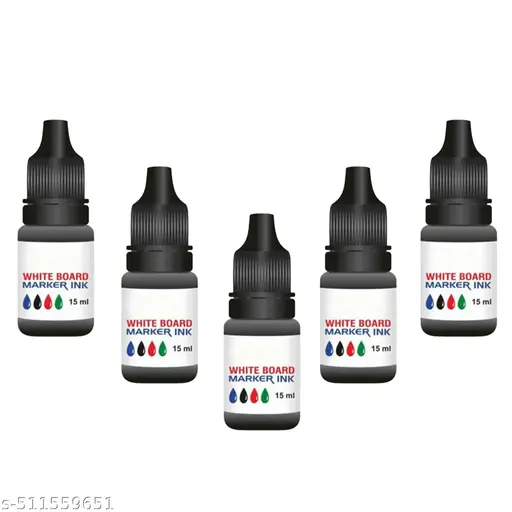

Red Marker (Highest Priority)
RED is the most attention-grabbing marker colour. It represents urgency, danger, and high importance, making it ideal for warnings and critical highlights.
Its strong visual impact ensures immediate focus, so it is used carefully and with clear intention.
Black Marker
BLACK symbolizes clarity and authority. It is widely used for writing, outlining, and clear communication due to its high readability.
Because of its professional appearance, black is preferred for formal and final work.
Blue Marker
BLUE represents trust and calmness. It is commonly used for general writing and explanations without creating visual stress.
This colour is suitable for notes and planning where balance and clarity are needed.
Green Marker (Lowest Priority)
GREEN stands for positivity and approval. It is often used to show correctness or progress.
With lower urgency, green works best for supportive and secondary highlights.